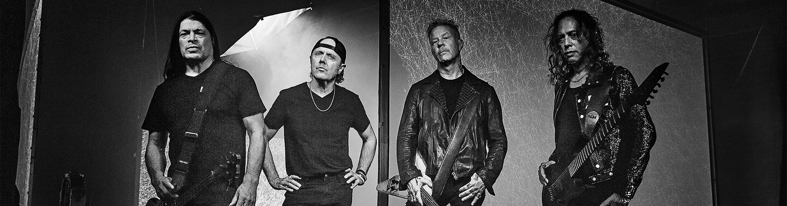
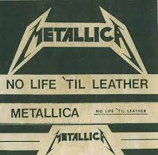
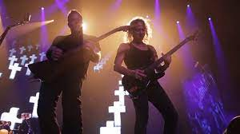
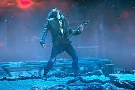

Metallica was formed on October 28 1981. They came together when Lars Ulrich and James Hetfeild put out a local ad to start a band.
Their first demo was No Life'Til Leather , which was released through tape recorders in the LA area.
Master of puppets was their 3rd album which came out in 1985 by the Sweet Silence/Rassmussen combo of producers.

Master of Puppets reached the top 30 hits chart and expanded the band's fanbase.
Stranger Things had resurfaced Metallica's song Master of Puppets when the character Eddie Muson played the guitar solo in Season 3 to help the other characters escape demigorgons.
